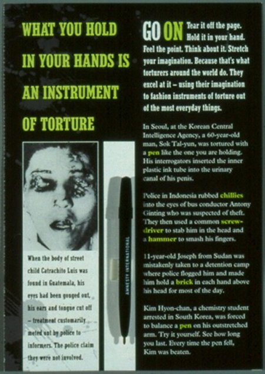

Ponto de Vista da SOFII
Esta é uma das comunicações de arrecadação de fundos que realmente fugiu do convencional. É famosa porque foi o primeiro pacote com caneta do mundo, mas é muito mais do que isso. É um caso emocionante, inteligente e maravilhosamente elaborado para apoiar uma das grandes causas globais. A beleza da coisa é que todo o conteúdo é relevante e sincero. Nenhum item é dispensável. Esse é o padrão de qualidade que todos os escritores e designers de mala direta deveriam ter a ambição de atingir.
Área de atuação
Direitos humanos, mudança social
País:
Reino Unido
Público alvo
Indivíduos
Meio de comunicação
Mala Direta
Criador
Ken Burnett
Resumo / Objetivos
Aquisição de doadores
Histórico
A Anistia Internacional precisava de um meio poderoso e eficaz de recrutamento de novos doadores para sua grande causa. Esse meio era o pacote da caneta. O criador do pacote, Karin Weatherup, recorda de uma carta recebida na época que dizia, ‘Este pacote salvou o pão da Anistia.’ Provavelmente não era exagero.
Características Especiais
Pela primeira vez, uma caneta de plástico gratuita foi enviada junto com uma correspondência de arrecadação de fundos no Reino Unido.
Influência/Impacto
Esta foi, até onde sabemos, a primeira vez em que uma caneta gratuita foi incluída em uma mala direta de aquisição, pelo menos no Reino Unido. Portanto este foi o pacote que lançou uma moda e milhares (ou mais) de cópias de qualidade inferiores. Mas isso não faz jus a este pacote inovador e extremamente eficaz. É também uma peça de comunicação muito bem trabalhada, brilhante e escrita com convicção. É a comunicação direta de captação de recursos como deveria ser.
Resultados
Tão bons que o pacote bancou a Anistia por 10 anos ou mais e foi copiado ou adaptado por muitas divisões da Anistia Internacional no mundo afora. Acredito que ela ainda esteja sendo utilizada pela Anistia Austrália.
Méritos
A correspondência foi brilhantemente bem sucedida e iniciou uma tendência que levou a uma onda de imitadores, os quais eram, em grande parte, cópias inferiores.
Relevância, evidentemente, é a palavra-chave aqui.
Incluir uma caneta gratuita ou não rapidamente tornou-se uma questão controversa para os captadores de recursos. Porém, do ponto de vista do doador, nunca era uma boa ideia. É condescendente e dá uma impressão de desperdício. Os doadores começaram a receber grandes quantidades dessas embalagens com uma caneta gratuita, o que certamente prejudicou a imagem das instituições de caridade.
Em seu blog na UK Fundraising, o especialista em mala direta, John Grain, disse:
‘Com exceção de uma ocasião memorável da Anistia Internacional muito tempo atrás, é no mínimo ingênuo acreditar que um doador consideraria uma caneta um componente essencial de uma peça bem executada de mala direta.’ Nada mau para um reconhecimento após 15 anos ou mais.
A lógica por trás dessas canetas realmente parece ser um pouco boba. Uma lembrancinha gratuita pode levar a um desvio temporário na resposta inicial, porém, é de alguma maneira um bom motivo para apoiar uma causa? Nós achamos que não. Já que a arrecadação de fundos é um negócio a longo prazo, um incentivo tão vazio obviamente não ajudará as caridades a encontrarem doadores que unam-se à causa, venha o que vier.
Mas em conjunto com um tratamento adequado, inteligente e criativo, como o de Karin neste pacote, a inclusão da caneta foi um golpe de mestre porque era relevante de maneira óbvia e relevante.

Para ler o caso diretamente no site da SOFII, clique aqui.